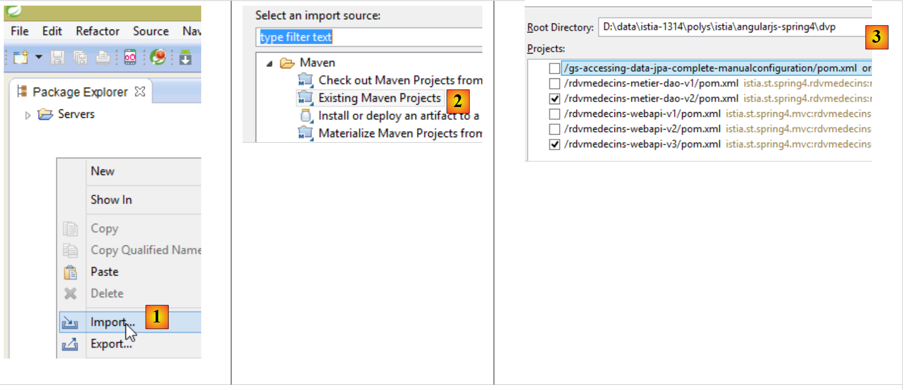
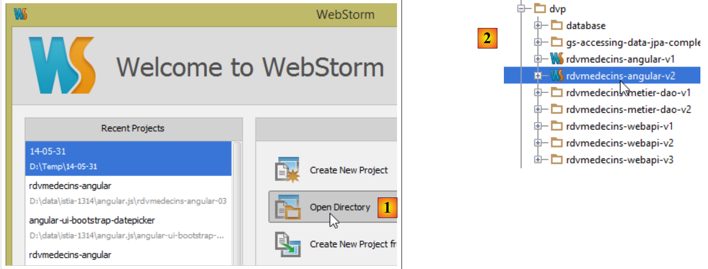

1. Introduction
Le PDF du document est disponible |ICI|.
Les exemples du document sont disponibles |ICI|.
Nous nous proposons ici d'introduire deux frameworks à l'aide d'un exemple de client / serveur :
- AngularJS utilisé pour le client. Pour simplifier, il sera noté Angular par la suite ;
- Spring 4 utilisé pour le serveur. Pour simplifier, il sera noté Spring par la suite ;
La compréhension de ce document nécessite certains pré-requis :
- un niveau intermédiaire en Java EE ;
- la connaissance de JPA (Java Persistence Api) qui sera utilisé pour accéder à une base de données ;
- la connaissance d'au moins une version précédente de Spring pour connaître la philosophie de ce framework ;
- l'utilisation de Maven pour configurer des projets Java ;
- une connaissance de base des échanges HTTP dans une application web ;
- les balises courantes du langage HTML ;
- une connaissance basique du langage Javascript ;
Les autres connaissances nécessaires seront introduites et expliquées au fur et à mesure de l'étude de cas.
Ce document n'est pas un cours et il est incomplet à bien des égards. Pour approfondir les deux frameworks, on pourra utiliser les références suivantes :
- [ref1] : le livre " Pro AngularJS " écrit par Adam Freeman aux éditions Apress. C'est un excellent livre. Les codes source des exemples de ce livre sont disponibles gratuitement à l'URL [http://www.apress.com/downloadable/download/sample/sample_id/1527/] ;
- [ref2] : la documentation officielle d'Angular JS [https://docs.angularjs.org/guide]
- [ref3] : le livre " Spring Data " chez o'Reilly [http://shop.oreilly.com/product/0636920024767.do] qui présente l'utilisation du framework [Spring Data] pour l'accès aux données que ce soit des bases de données relationnelles ou pas (NoSQL) ;
- [ref4] : le livre " Pro Spring3 " aux éditions Apress. C'est la version précédente de Spring 4 mais les principaux concepts sont déjà là ;
- [ref5] : la documentation de référence de Spring 4 [http://docs.spring.io/spring/docs/current/spring-framework-reference/pdf/spring-framework-reference.pdf].
Les sources qui ont nourri ce document sont celles citées ci-dessus plus l'indispensable [http://stackoverflow.com/] pour les très nombreuses séances de débogage.
1.1. L'architecture de l'application
L'application étudiée aura l'architecture suivante :

- en [1], un serveur web délivre des pages statiques à un navigateur. Ces pages contiennent une application AngularJS construite sur le modèle MVC (Modèle – Vue – Contrôleur). Le modèle ici est à la fois celui des vues et celui du domaine représenté ici par la couche [Services] ;
- l'utilisateur va interagir avec les vues qui lui sont présentées dans le navigateur. Ses actions vont parfois nécessiter l'interrogation du serveur Spring 4 [2]. Celui-ci traitera la demande et rendra une réponse JSON (JavaScript Object Notation) [3]. Celle-ci sera utilisée pour mettre à jour la vue présentée à l'utilisateur.
1.2. Les outils utilisés
Dans ce document les outils de développement utilisés sont les suivants :
- Spring Tool Suite pour le serveur Spring : téléchargeable gratuitement ;
- Webstorm pour le client Angular : une version d'évaluation pour un mois est téléchargeable gratuitement ;
- Wampserver pour la gestion de la base de données MySQL 5 : téléchargeable gratuitement ;
L'installation de ces outils et d'autres est décrite au paragraphe 6.
1.3. Les fonctionnalités de l'application
Le code de l'exemple est disponible |ICI|sous la forme d'un fichier zip à télécharger.
 |  |
- le serveur est contenu dans les dossiers [rdvmedecins-metier-dao-v2] et [rdvmedecins-webapi-v3] ;
- le client est contenu dans le dossier [rdvmedecins-angular-v2] ;
- le script SQL de génération de la base de données MySQL5 est dans le dossier [database] ;
1.3.1. Création de la base de données
Pour tester l'application, nous créons d'abord la base de données avec le script SQL [dbrdvmedecins.sql]. Nous utilisons l'outil [PhpMyAdmin] de WampServer :
 |
- en [1], on sélectionne l'outil [phpMyAdmin] de WampServer ;
- en [2], on choisit l'option [Importer] ;
 |
- en [3], on sélectionne le fichier [database/dbrdvmedecins.sql] ;
- en [4], on l'exécute ;
- en [5], la base de données créée.
1.3.2. Mise en oeuvre du serveur web / JSON
Avec Spring Tool Suite (STS), on importe les deux projets Maven du serveur Spring 4 :
 |
- en [1] et [2], nous importons des projets Maven ;
- en [3], nous désignons le dossier parent des deux projets à importer ;
 |
- en [3], les projets importés. Il se peut que les projets présentent des erreurs. Il faut que chacun d'eux utilise un compilateur >=1.7 :
 |
Il faut donc une JVM >=1.7 :
 |
Lorsqu'il n'y a plus d'erreurs de JVM, on peut exécuter le projet [rdvmedecins-webapi-v3] :
 |
- en [4], [5] et [6] nous exécutons le projet [rdvmedecins-webapi-v3] comme une application Spring Boot ;
Nous obtenons alors les logs suivants dans la console de STS :
- lignes 13-14 : l'application a démarré sur un serveur Tomcat.
1.3.3. Mise en oeuvre du client Angular
Nous ouvrons le dossier [rdvmedecins-angular-v2] avec WebStorm :
 |
- en [1], on choisit l'option [Open Directory] ;
- en [2], on sélectionne le dossier [rdvmedecins-angular-v2] ;
 |
- en [3], l'arborescence du dossier ;
- en [4], on sélectionne la page principale [app.html] de l'application ;
- en [5], on l'ouvre dans un navigateur récent ;
 |
- en [6], la page d'entrée de l'application. Il s'agit d'une application de prise de rendez-vous pour des médecins. Cette application a déjà été traitée dans le document Introduction aux frameworks JSF2, Primefaces et Primefaces mobile ;
- en [7], une case à cocher qui permet d'être ou non en mode [debug]. Ce dernier se caractérise par la présence du cadre [8] qui affiche le modèle de la vue courante ;
- en [9], une durée d'attente artificielle en millisecondes. Elle vaut 0 par défaut (pas d'attente). Si N est la valeur de ce temps d'attente, toute action de l'utilisateur sera exécutée après un temps d'attente de N millisecondes. Cela permet de voir la gestion de l'attente mise en place par l'application ;
- en [10], l'URL du serveur Spring 4. Si on suit ce qui a précédé, c'est [http://localhost:8080];
- en [11] et [12], l'identifiant et le mot de passe de celui qui veut utiliser l'application. Il y a deux utilisateurs : admin/admin (login/password) avec un rôle (ADMIN) et user/user avec un rôle (USER). Seul le rôle ADMIN a le droit d'utiliser l'application. Le rôle USER n'est là que pour montrer ce que répond le serveur dans ce cas d'utilisation ;
- en [13], le bouton qui permet de se connecter au serveur ;
- en [14], la langue de l'application. Il y en a deux : le français par défaut et l'anglais.
 |
- en [1], on se connecte ;
 |
- une fois connecté, on peut choisir le médecin avec lequel on veut un rendez-vous [2] et le jour de celui-ci [3] ;
- on demande en [4] à voir l'agenda du médecin choisi pour le jour choisi ;
 |
- une fois obtenu l'agenda du médecin, on peut réserver un créneau [5] ;
 |
- en [6], on choisit le patient pour le rendez-vous et on valide ce choix en [7] ;
 |
Une fois le rendez-vous validé, on est ramené automatiquement à l'agenda où le nouveau rendez-vous est désormais inscrit. Ce rendez-vous pourra être ultérieurement supprimé [7].
Les principales fonctionnalités ont été décrites. Elles sont simples. Celles qui n'ont pas été décrites sont des fonctions de navigation pour revenir à une vue précédente. Terminons par la gestion de la langue :
 |
- en [1], on passe du français à l'anglais ;
 |
- en [2], la vue est passée en anglais, y-compris le calendrier ;